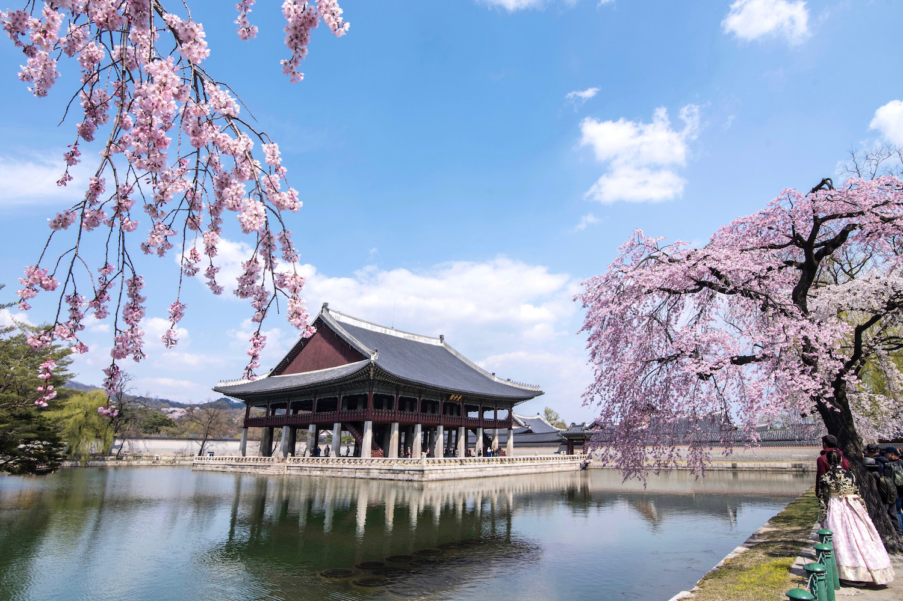

Welcome to Take a Pic!
My name is Sam and I am an aspiring photographer that wants to specialize in photos taken in different countries. Here I have captured the most awe taking photos from my time in countries in both the city and countryside and I wanted to share it here. You can click the filters at the top to see my captures. I hope you enjoy and do not forget to come back for more.
Thailand

Thailand is a beautiful place full of welcoming people that make you feel at home. It has both the booming and bustling city but also the calm can be found outside where you can feel the sun shining on your skin.
Germany
Known for its rich history, stunning architecture, and vibrant culture. It is famous for its medieval castles, picturesque towns, beer festivals, and contributions to classical music and philosophy.
South Korea
South Korea is renowned for its technological innovation, delicious cuisine, and fascinating blend of ancient traditions and modernity. It's home to bustling cities like Seoul, serene temples, and a booming industry in kpop and kdramas.
Jalisco
Jalisco is a state in western Mexico known for its vibrant culture, traditional mariachi music, and delicious cuisine. Its capital, Guadalajara, is a lively city with colonial architecture, while the countryside is dotted with agave fields, the source of tequila production.
Bangkok
The capital city of Thailand, Bangkok is a bustling metropolis famous for its ornate temples, vibrant street life, and delicious street food. It's a city where ancient traditions meet modern skyscrapers, offering visitors a sensory overload of sights, sounds, and flavors.
Naejangsan
Naejangsan is a mountain located in the southwestern region of South Korea, famous for its stunning autumn foliage. It's a popular destination for hiking and enjoying the vibrant colors of the changing seasons, with picturesque temples nestled among the trees.
Small Town

This small German town exudes charm with its half-timbered houses, cobblestone streets, and flower-filled window boxes. Visitors can immerse themselves in the relaxed pace of life, explore local breweries, and stroll along scenic riverbanks.
Countryside in Thailand
Thailand's countryside is a picturesque tapestry of vibrant green rice fields, swaying palm trees, and tranquil waterways. Lush greenery with 2 healthy horses in the back. Away from the bustling cities, visitors can discover the beauty of rural life.
Riverside
Along the tranquil riversides of Germany, visitors can unwind and soak in the peaceful atmosphere while enjoying scenic views of historic castles, charming villages, and lush vineyards. Nice relaxing vibes in Germany's city side away from the city.
Jalisco's Beauty
Jalisco's countryside is a picturesque expanse of rolling hills, verdant valleys, and agave fields stretching to the horizon. With rustic haciendas, colorful villages, and towering cacti, this idyllic landscape invites visitors to explore its natural beauty, and experience the warmth of Mexican hospitality.